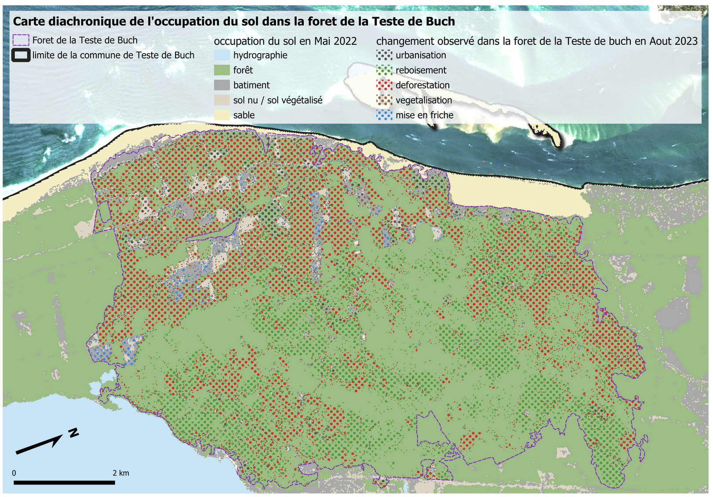
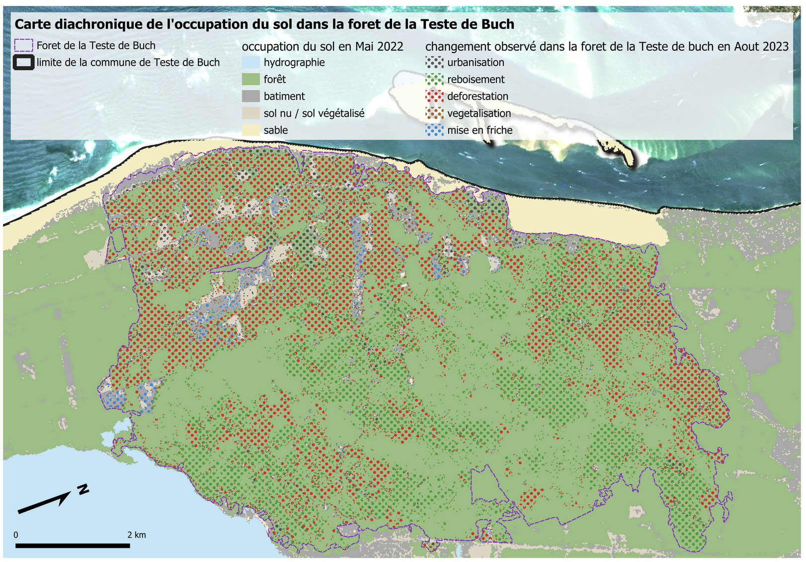

Analyse diachronique

Carte diachronique montrant l'évolution des surfaces de la forêt
Image Sentinel-2 après l'incendie
Analyse des dégâts environnementaux à l'aide d'imagerie satellitaire
Ce projet vise à évaluer les dégâts causés par l'incendie qui a ravagé la forêt de la Teste-de-Buch durant l'été 2022. En combinant des données Sentinel-2 et des outils de télédétection dont Orfeo ToolBox, nous avons pu établir une cartographie précise des zones touchées. Une analyse diachronique a permis d'étudier l'évolution de l'état de la végétation avant et après l'incendie, en 2022 et en 2023. Les données ont pu être récupérées sur GEODES via DATATERRA, elles se composent de trois images, une image capturée en mai 2022 (situation avant incendie), une image capturée en octobre 2022 (situation juste après l'incendie) et enfin une image en aout 2023 (un an après l'incendie).
Comparaison des classifications supervisées (méthode KNN) - Années 2022 et 2023
La classification KNN permet d'identifier les zones brûlées à partir de la modification des signatures spectrales. On observe une nette diminution des surfaces boisées entre 2022 et 2023, au profit des sols nus ou en régénération.
Comparaison des indices NDVI calculés sur les années 2022 et 2023
L'indice NDVI montre une chute brutale de la végétation suite à l'incendie. En 2023, on note une reprise partielle sur certaines zones, signe d'une régénération progressive, bien que hétérogène.
Carte diachronique montrant l'évolution des surfaces de la forêt
Image Sentinel-2 après l'incendie
Les comparaisons visuelles confirment les résultats quantitatifs : perte de couvert végétal dense, apparition de sols nus, zones noircies caractéristiques de la combustion. Ces changements sont bien détectés par les méthodes d'observation spatiale.

Évolution des surfaces classées par catégorie entre 2022 et 2023
Les différentes analyses croisées (classifications, NDVI, diachronie visuelle) permettent de dresser un bilan clair des impacts de l’incendie. Le traitement automatique des images satellites offre des outils puissants pour le suivi environnemental post-catastrophe.